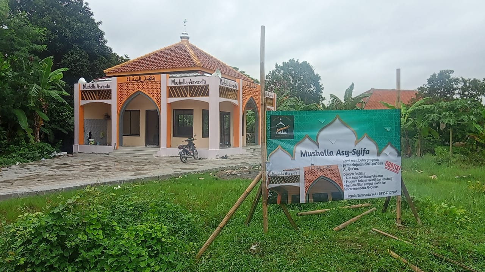

Web Musholah Asy-Syifa
**Musholah Asy-Syifa** adalah sebuah tempat ibadah umat Islam yang dibangun pada bulan Januari tahun 2025. Musholah ini terletak di lingkungan yang tenang dan religius, tepatnya di **Desa Bakung Lor**, Kecamatan **Jamblang**, Kabupaten **Cirebon**, Provinsi Jawa Barat.
Pembangunan Musholah Asy-Syifa didorong oleh semangat kebersamaan warga setempat dalam menyediakan sarana ibadah yang nyaman, bersih, dan dapat digunakan untuk kegiatan keagamaan sehari-hari, seperti salat berjamaah, pengajian, serta kegiatan sosial keagamaan lainnya.
Dengan suasana yang tenang dan lingkungan yang mendukung, Musholah Asy-Syifa diharapkan menjadi pusat spiritual sekaligus penguat tali silaturahmi masyarakat di sekitarnya.
Jika ada saran, hubungi saya.
Jika ada saran, hubungi saya.

Foto mushola Asy-Syifa